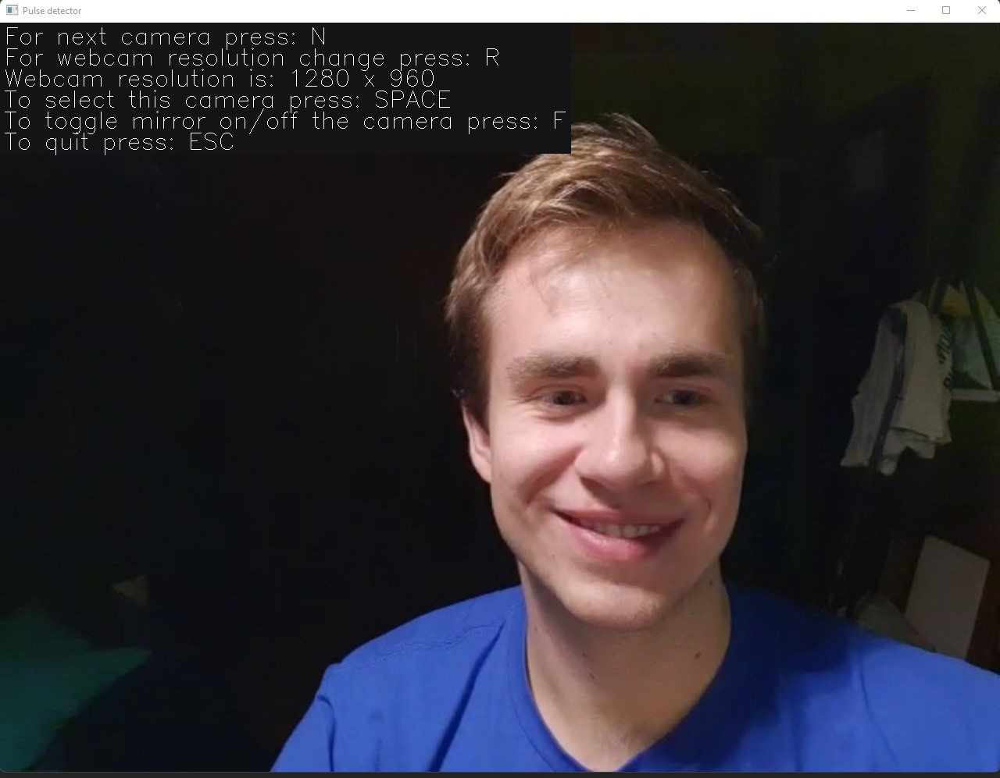
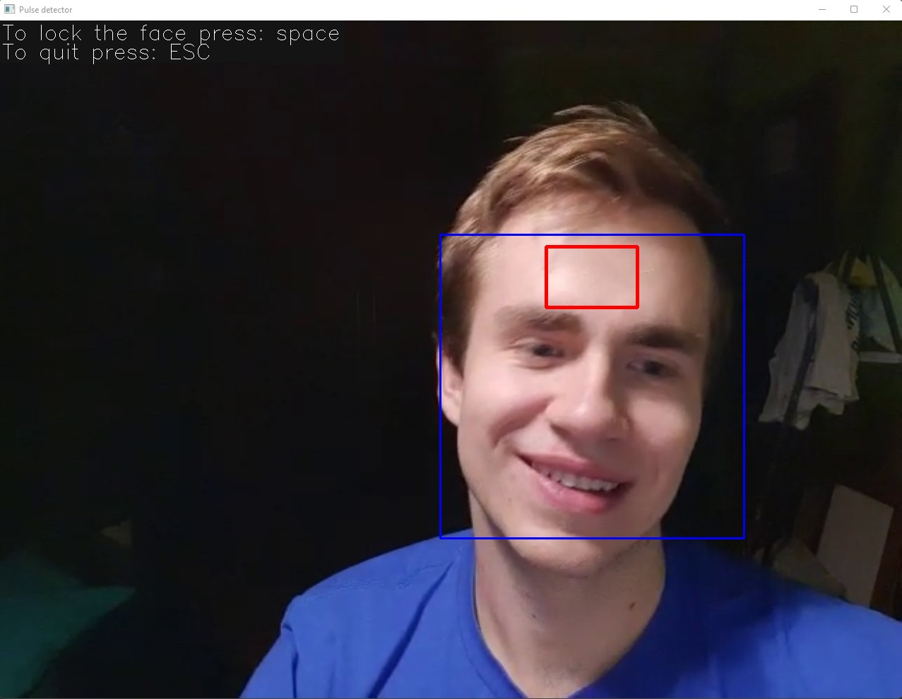
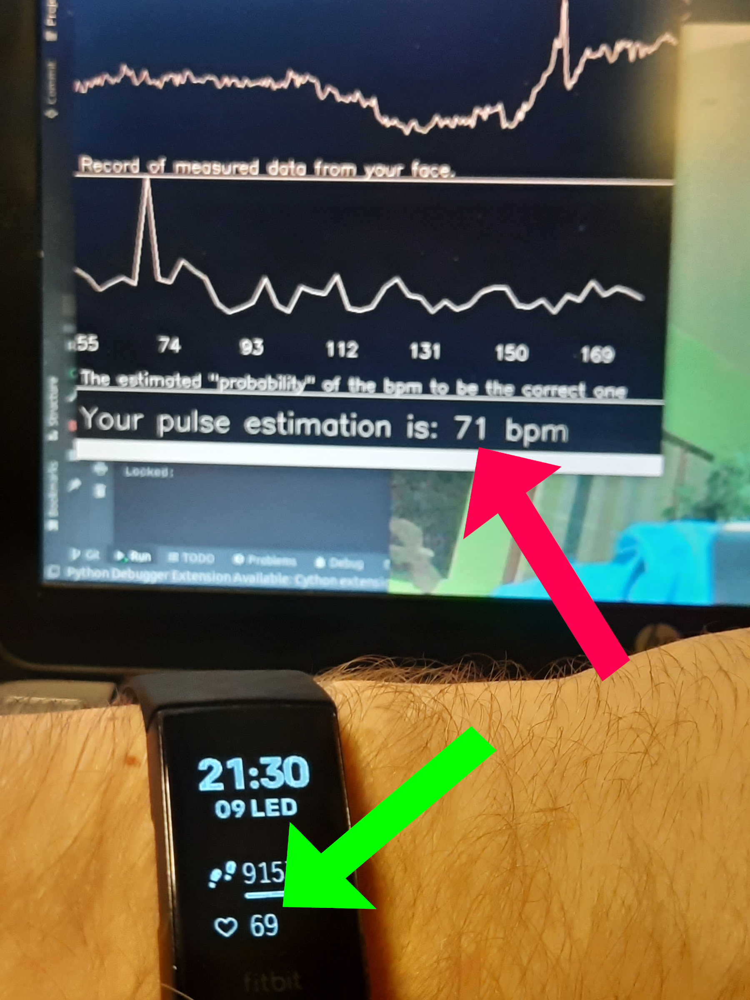
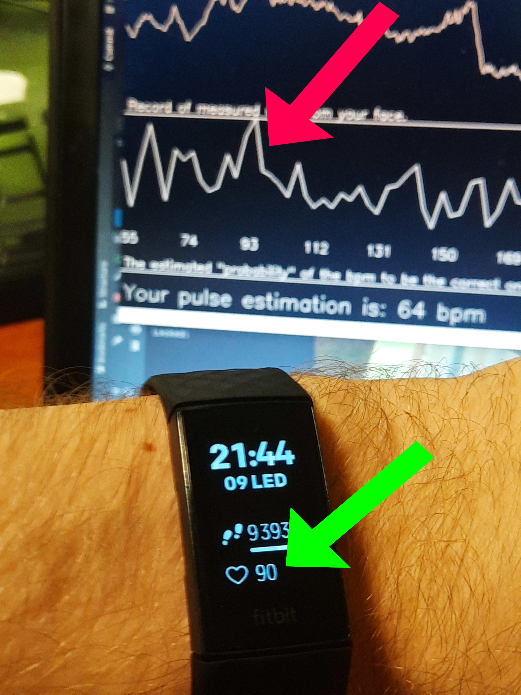

Pulse Detector (+ visualization)
Projekt předmětu NI-CCC v zimním semestru 2021
Autoři: Pavel Kříž

Nápad
Hlavní myšlenka, je ta, že by se dala vytvořit aplikace v Pythonu (ideální technologie), která by pomocí webové kamery snímala frekvenci srdečního tepu, případně i frekvenci dýchání. Na taková data by se však dobře dala navázat nějaká interaktivní vizualizace. V případě, že by se někdo připojil a nedělal bych to v jednom, tak by se dala vytvořit i nějaká vizualizace, třeba i větší (SAGE...), protože snímat tep jde takto i z více lidí najednou, s jediným problémem snižené přesnosti měření.
Nápady na vizualizaci
V jakých rozmezí se můžou vstupní hodnoty pohybovat (za minutu):
- Frekvence srdečního tepu: 60-90 (v klidu) a 90 - 160 (max 214) (při zátěži)
- Rozsah srdečního tepu u atletů: 40-214
- Dechová frekvence: 16-20 (v klidu)
Cílem projektu je detekovat hlavně tepovou frekvenci a tu dechovou jen pokud to bude možné. Pro vizualizaci je tedy dobré očekávat jako vstup hlavně jednu hodnotu co se bude pravděpodobně pohybovat někdy mezi 60-160. Ideálně bude možné detekovat tepovou frekvenci více uživatelům najednou (pokud to rozumně půjde).
Jelikož jsou hodnoty celkem vysoké, tak by se dala vizualizace vytvořit v nějakém měřítku k tepu, nebo by se to muselo vymyslet tak aby nevypadala úplně jako stroboskop.
Existující řešení detekce tepu
webcam-pulse-detector
Níže je vidět toto řešení v běhu. V tu chvíli mi to ukazovalo srdeční puls celkem přesně. Porovnával jsem totiž hodnoty s fitness náramkem na ruce (ten není stoprocentně přesný ale minimálně orientačně ano). Je ale nutné říct, že hodnoty často skákali někam úplně jinam. Například tedy ze 70 hned na 50 a pak hned na 100. To však může být způsobeno nekvalitní kamerou a jejím šumem.

Další řešení
Předchozí řešení je psané v Pythonu, což má své velké výhody. Nicméně existuje i řešení psané v JavaScriptu, jehož výhoda zpočívá ve snadném zpřístupnění na internetu. To ale nebylo vyzkoušeno.
Jiné řešení co jsem našel na videu je zajímavé tím, že využívá tváří jako čtecích ploch srdečního tepu. To řešní ale nebylo ozkoušeno.
Plán
Cílem je vytvořit aplikaci ve dvou fázích
- 1. Aplikace detekuje obličej
- 2. Aplikace detekuje tepovou frekvenci
- 2b. Aplikace detekuje tepovou i při změně polohy uživatele
- 2c. Aplikace detekuje tepovou frekvenci více uživatelům najednou
- 2d. (případně) Aplikace detekuje dechovou frekvenci
- 3. (pokud se ještě někdo připojí a vznikne tým) Vytvoření vizualizace vhodné pro vytvořená data
- 4. (pokud se ještě někdo připojí a vznikne tým) Napojení vizualizace na detekční aplikaci
Rozpracování
Momentálně byla vytvořena aplikace detekující obličeje a oči(modře) a nacházející zónu měření (červeně). Na obrázku je vidět příprava na plochu měření srdečního tepu, která je shodující s tou z existujícího měření. To lze měřit však ze všech dalších ploch větších ploch pokrytých pouze kůží (například tváří).

Následně byla vytvořena jednoduchá kostra algoritmu měření, která sbírá data z obrazovky a velice jednoduchým způsobem je zobrazuje. Nyní, je potřeba data už jen zanalyzovat, získat frekvence a jejich dominance.
Dokončení
Do dokončení bylo potřeba ještě mnoho práce. Mnohem více než bylo potřeba na popsání kapitoly rozpracování. Bylo potřeba totiž nejen implementovat analýzu dat ale také je lépe vizualizovat, přegramovat kód do praktičtější struktury, přidat uživatelské rozhraní, nastavení kamery a celé to doladit a zlehka otestovat. Výsledná aplikace vypadá pak nějak takto:
Na předchozím obrázku je hlavní snímací část aplikace, která se zobrazuje ve dvou oknech. Nastavení kamery je poměrně snadné a společně s dialogem zakotvení obličeje je vidět na následujících obrázcích:


Je dobré poznamenat, že na první pohled nepraktické a krkolomné zamknutí obličeje je důležité pro vyšší přesnost měření.
Výsledná přesnost pak byla otestována vůči fitness náramku, který měří tep ze zápěstí (náramek měří podle veřejných testů tep tak uspokojivě přesně). Ukázalo se, že přesnost detekce z obrazu nějakou výpovědní hodnotu má, přestože nejvíc záleží na webkameře a světelných podmínkách. Nelze však říct bez většího testování nakolik, je taková přesnost spolehlivá či nespolehlivá.
Následující obrázek ukazuje šťastný případ kdy, se detekované frekvence tepu setkaly (při klidovém scénáři měření):

Na dalším obrázku je vidět naopak nedokonalost měření. Kdy je sice v momentě focení správná frekvence změřena dobře (jde o zlomek sekundy) avšak průběžný výsledek ukazuje chybný výpočet tepové frekvence. Na důležitá místa ukazují šipky ( při neklidném scénáři měření - po cvičení):

Spuštění
Na spuštění je potřeba spustit program následovně "python3 ./pulse_detector.py". Na spuštění programu je potřeba právě Python 3 a instalovaný balíček opencv-python. Kód programu/aplikace je možné v adresáři "src" v této složce.
Zhodnocení stavu po dokončení
Bohužel se nepodařilo najít spolupracovníka na projektu, takže byl projekt dokončen v omezeném rozsahu. Přes další komplikace se však podařilo dokončit alespoň několik bodů ze stanovených cílů (vizualizace dat se dá hodnotit jako triviální implementace bodu "vizualizace"). Na výsledku je vidět inspirace existujícím řešením. Původně byla snaha o inovátorský přístup, nakonec se ale ukázalo, že ověřený přístup bude správnou cestou. V porovnání s existujícím řešení, jsou některé věci horší (komplexita výpočtu, animace na čele) a některé naopak lepší (nastavení kamery, prezentace dat). Dále pak přesnost byla v rámci rychlého testování ohodnocená jako srovnatelná s existujícím řešením uvedeným na této stránce. Protože, by bylo ale možné dost věcí stále zlepší, tak lze zhodnotit výsledek pozitivně, protože je alespoň srovnatelný s existujícím řešením a nabízí prostor ke zlepšení a napojení případné vizualizace.